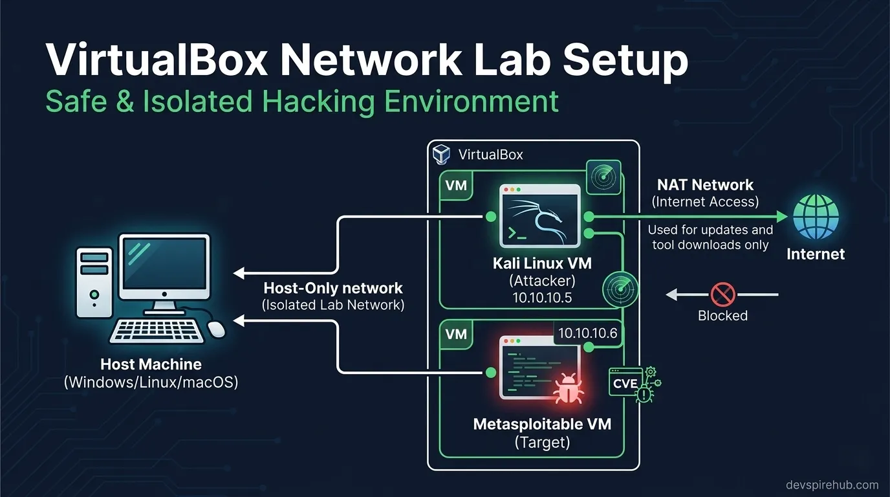
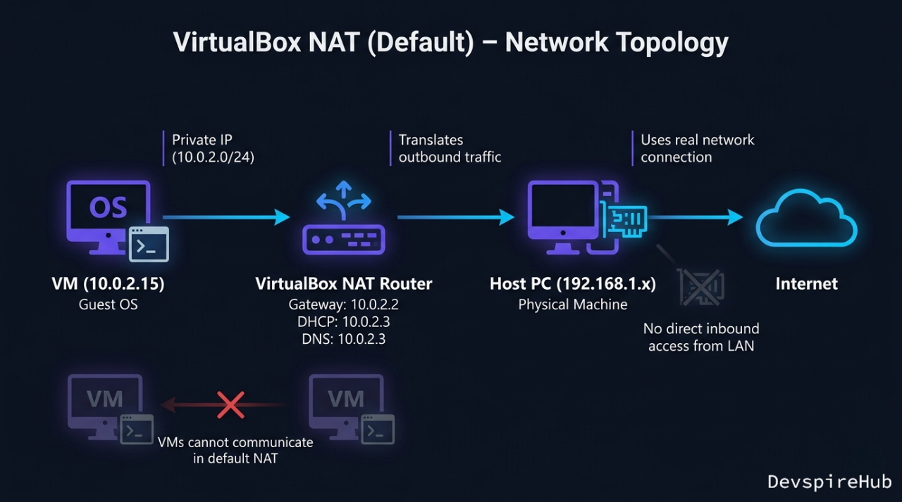
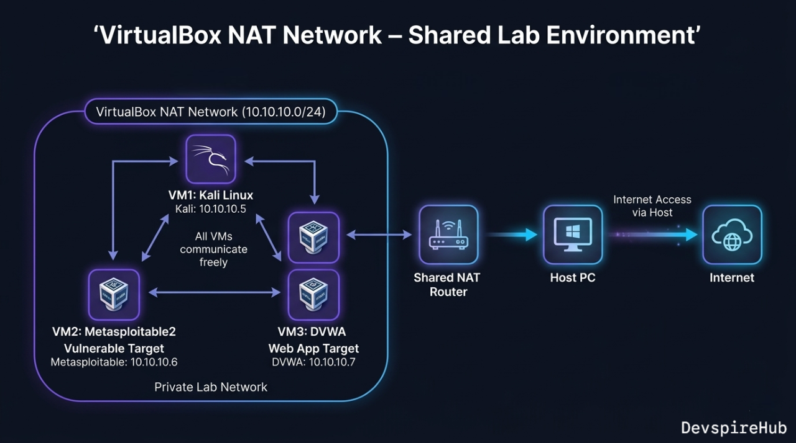
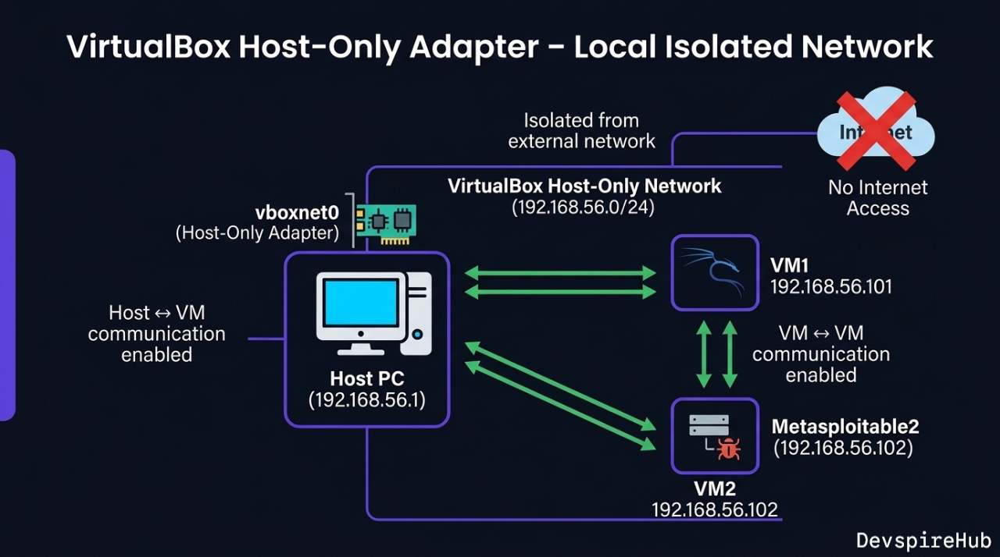
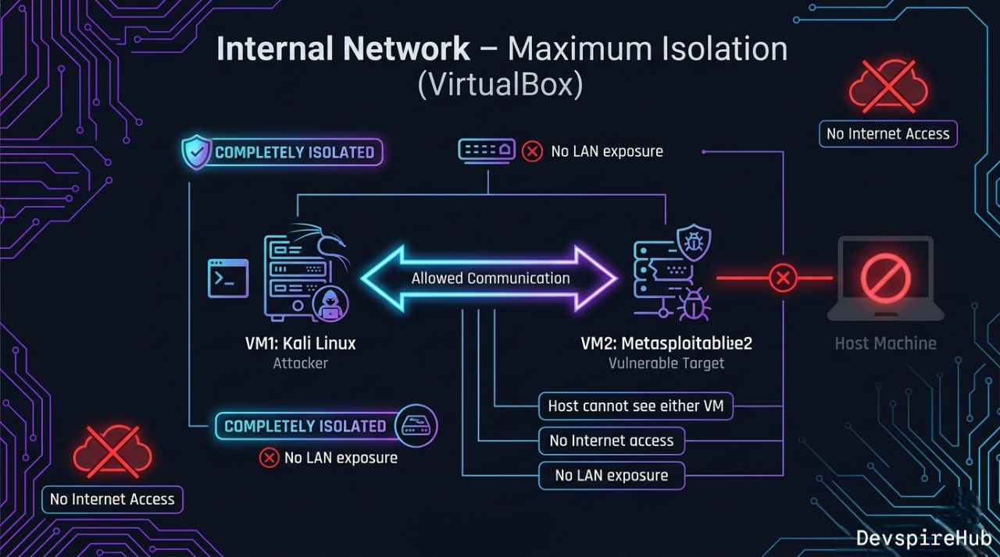
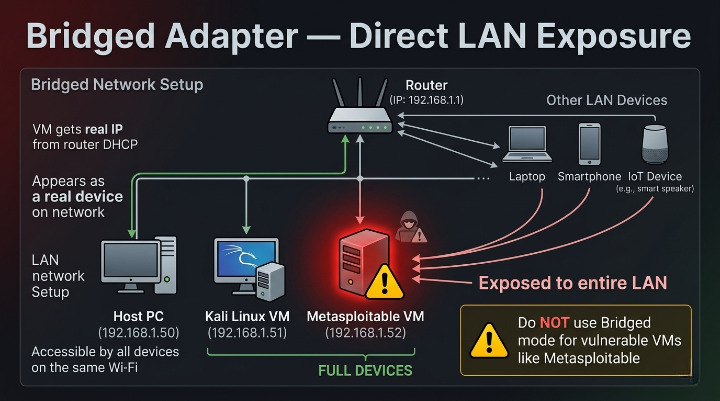
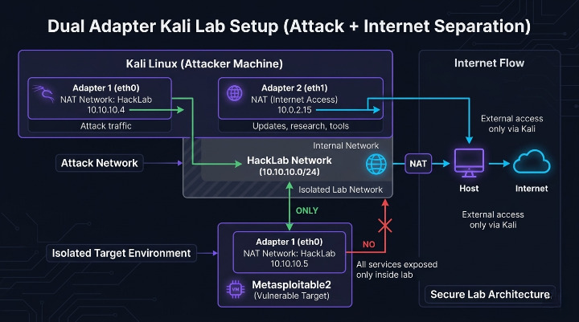
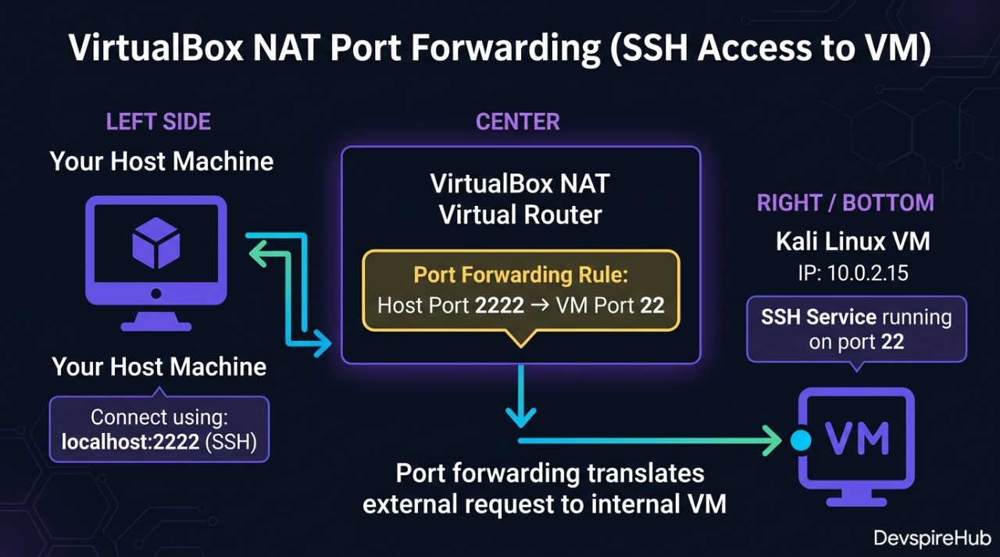
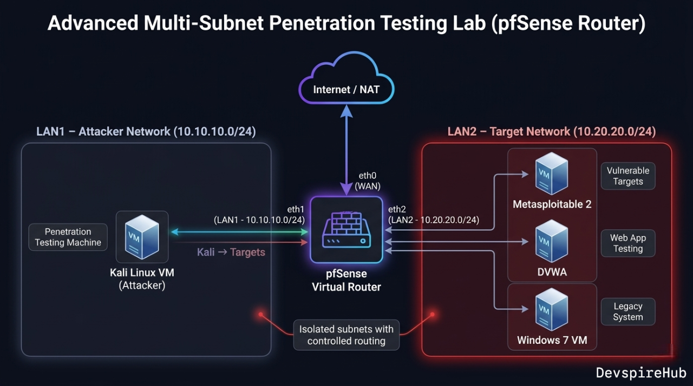

How to Configure VirtualBox networks for Secure Cybersecurity Lab (Step-by-Step Guide)
Keywords: VirtualBox network modes | VirtualBox NAT Network vs Host-Only | isolated hacking lab network setup | VirtualBox network configuration tutorial | ethical hacking lab VirtualBox
If your Kali Linux VM cannot ping Metasploitable2, or your vulnerable VM is accidentally exposed to your home Wi-Fi, the problem is almost always one thing: wrong VirtualBox network mode. Network misconfiguration is the #1 reason beginner hacking labs break — and most tutorials skip the explanation entirely.

This guide gives you a complete, no-confusion understanding of all six VirtualBox network modes, three ready-to-use lab topologies, and exact configuration steps for building a properly isolated ethical hacking lab on your own computer.
Why VirtualBox Network Configuration Matters
VirtualBox has six completely different network modes — and choosing the wrong one has serious consequences:
Wrong mode ⟶ Kali can't reach Metasploitable (lab broken) Wrong mode ⟶ Metasploitable exposed to LAN (security risk) Wrong mode ⟶ Kali loses internet mid-session (update broken) Right mode ⟶ Isolated, functional, safe lab ✔
Most beginners leave every VM on the default NAT setting — which means two VMs on NAT mode cannot communicate with each other at all, even though they appear identically configured.
What This Tutorial Covers
By the end of this guide you will fully understand and be able to configure:
- All 6 VirtualBox network modes — NAT, NAT Network, Host-Only, Internal Network, Bridged, Not Attached.
- Three production-ready lab topologies — NAT Network (recommended), Internal Network (maximum isolation), Host-Only + NAT (host terminal access).
- Dual-adapter Kali setup — lab attacks on one adapter, internet access on another simultaneously.
- Port forwarding — access VM services from your host browser or terminal.
- VBoxManage CLI reference — script your entire lab setup from the command line.
- Troubleshooting — fix every common VM connectivity issue.
- Security checklist — ensure Metasploitable never leaks onto your real LAN.
⚠️ Security Reminder: This guide configures a private, self-contained lab environment. Never connect intentionally vulnerable VMs like Metasploitable2 to your real LAN or the internet. Accidental exposure puts your own network at risk.
Introduction
Network misconfiguration is the #1 reason beginner hacking labs break — either the attacker VM can't reach the target, the target leaks onto your real LAN, or Kali loses internet access mid-session. [ 1 ] VirtualBox has six distinct network modes, each with completely different behaviour. Choosing the wrong one either kills your lab connectivity or — worse — accidentally exposes a vulnerable VM to your home network.
This guide gives you a complete understanding of every mode, the exact configuration steps for three lab topologies, and a CLI reference for scripting your setup.
All Six VirtualBox Network Modes Explained
Quick Reference Matrix
| Mode | VM ⟶ Internet | VM ↔ VM | Host ↔ VM | Visible on LAN | Use For |
|---|---|---|---|---|---|
| NAT (default) | ✅ Yes | ❌ No | ❌ No (port fwd only) | ❌ No | Single VM internet |
| NAT Network | ✅ Yes | ✅ Yes | ❌ No (port fwd only) | ❌ No | Multi-VM lab + internet |
| Host-Only | ❌ No | ✅ Yes | ✅ Yes | ❌ No | Lab + host access |
| Internal Network | ❌ No | ✅ Yes | ❌ No | ❌ No | Maximum isolation |
| Bridged | ✅ Yes | ✅ Yes | ✅ Yes | ✅ YES ⚠️ | Production-like testing |
| Not Attached | ❌ No | ❌ No | ❌ No | ❌ No | Air-gapped single VM |
⚠️ Never use Bridged mode for Metasploitable2 — it exposes the vulnerable VM to every device on your home Wi-Fi network.
Deep Dive: Each Mode Explained
NAT (Default)
NAT is the out-of-the-box default — every new VM uses it. VirtualBox creates a virtual router inside the host, assigns the VM an IP in the 10.0.2.0/24 range, and translates outbound traffic through the host's real connection. [ 2 ]

The critical limitation: Each VM gets its own completely separate NAT router. Two VMs both on NAT mode cannot communicate with each other even though they look identically configured. This is why your ping between Kali and Metasploitable fails if both are on default NAT. [ 2 ]
Default NAT address assignments:
| Component | Default NAT Address | Function |
|---|---|---|
| VM IP | 10.0.2.15 |
The internal address assigned to your Kali/Metasploitable VM. |
| Virtual Gateway | 10.0.2.2 |
Used by the VM to reach the outside internet. |
| DHCP Server | 10.0.2.3 |
Automatically assigns IPs to VMs when they boot. |
| DNS Server | 10.0.2.3 |
Resolves domain names (e.g., google.com) for the VM. |
NAT Network [Recommended for Most Labs]
NAT Network is NAT shared between multiple VMs — all VMs join the same virtual router, can reach each other, and share a single NAT exit to the internet. This is the best choice for a Kali + Metasploitable lab where you want internet on Kali but full isolation from your real LAN. [ 2 ]

Host-Only Adapter
Host-Only creates a virtual network card on your host machine (shown as VirtualBox Host-Only Ethernet Adapter in Windows, vboxnet0 on Linux) that bridges the host and all VMs. VMs can talk to each other and to the host, but have no route to the internet.

Best use case: When you want to SSH into a VM from your host terminal, or share files easily between host and VM without internet exposure.
Internal Network [Maximum Isolation]
Internal Network is the most locked-down mode — VMs can only talk to other VMs on the same named network. The host cannot see them, there is no internet, no DHCP unless you configure it manually.

Best use case: Malware analysis labs, or when practicing with exploits you don't want to accidentally escape your VM boundary.
Bridged Adapter [Dangerous for Vulnerable VMs]
Bridged mode connects the VM directly to your physical network card — the VM gets its own IP from your real router's DHCP and appears as a full device on your LAN. [ 2 ]

Never use Bridged mode for Metasploitable or any intentionally vulnerable VM. Every device on your home Wi-Fi can reach it.
Three Lab Topologies — Step-by-Step Configuration
Topology 1: NAT Network (Recommended Beginner Setup)
Best for:Metasploitable with internet access on Kali. [ 5 ]
Step 1 — Create the NAT Network
Via GUI:
- VirtualBox ⟶ File ⟶ Preferences ⟶ Network
- Click + to add a NAT Network
- Configure:
- Name: HackLab
- Network CIDR: 10.10.10.0/24
- Enable DHCP
- Supports IPv6: OFF
- Click OK
Via CLI (VBoxManage):
cmd
# Create the NAT Network named HackLab
VBoxManage natnetwork add \
--netname HackLab \
--network "10.10.10.0/24" \
--enable \
--dhcp on
# Verify it was created
VBoxManage natnetwork list
Step 2 — Assign VMs to HackLab
cmd
# Assign Kali to HackLab NAT Network
VBoxManage modifyvm "Kali Linux" \
--nic1 natnetwork \
--nat-network1 "HackLab"
# Assign Metasploitable to HackLab NAT Network
VBoxManage modifyvm "Metasploitable2" \
--nic1 natnetwork \
--nat-network1 "HackLab"
Or via GUI: VM ⟶ Settings ⟶ Network ⟶ Adapter 1 ⟶ Attached to: NAT Network ⟶ Name: HackLab
Step 3 — Add Internet Adapter to Kali Only
Give Kali a second adapter for internet access (tool updates, research) while keeping its lab interface on HackLab: [ 2 ]
cmd
VBoxManage modifyvm "Kali Linux" \
--nic2 nat
Or GUI: Kali Settings ⟶ Network ⟶ Adapter 2 ⟶ Enable ⟶ Attached to: NAT
Final Topology:
Kali Linux eth0 ⟶ 10.10.10.x (HackLab — attacks go here) eth1 ⟶ 10.0.2.15 (NAT — internet access) Metasploitable 2 eth0 ⟶ 10.10.10.y (HackLab — target) [no internet access]
Topology 2: Internal Network (Maximum Isolation)
Best for: Malware analysis, exploit development, fully air-gapped practice. [ 4 ]
Step 1 — Configure Internal Network on Both VMs
Via CLI:
cmd
VBoxManage modifyvm "Kali Linux" \
--nic1 intnet \
--intnet1 "IsolatedLab"
VBoxManage modifyvm "Metasploitable2" \
--nic1 intnet \
--intnet1 "IsolatedLab"
Internal Network has no built-in DHCP — you must assign static IPs manually.
Step 2 — Assign Static IPs Inside Each VM
On Kali Linux:
cmd
# Temporary (until reboot)
# Manually assigns the IP address
sudo ip addr add 10.20.20.10/24 dev eth0
# Turns on (activates) the eth0 network interface
sudo ip link set eth0 up
# Permanent (Kali uses NetworkManager)
# Edits the saved network profile called "Wired connection 1" in NetworkManager
sudo nmcli connection modify "Wired connection 1" \
ipv4.addresses "10.20.20.10/24" \
ipv4.method manual
# Applies and activates the updated network profile immediately
sudo nmcli connection up "Wired connection 1"
On Metasploitable 2:
cmd
# Temporary
sudo ifconfig eth0 10.20.20.20 netmask 255.255.255.0 up
# Permanent (edit interfaces file)
sudo nano /etc/network/interfaces
Add to /etc/network/interfaces:
cmd
auto eth0
iface eth0 inet static
address 10.20.20.20
netmask 255.255.255.0
Step 3 — Add Internet Adapter to Kali (Optional)
cmd
# Add NAT as Adapter 2 for internet on Kali only
VBoxManage modifyvm "Kali Linux" \
--nic2 nat
Test Connectivity:
cmd
# From Kali
ping 10.20.20.20 -c 3 # Should succeed
ping 8.8.8.8 -c 3 # Should succeed (via eth1)
# From Metasploitable
ping 10.20.20.10 -c 3 # Should succeed
ping 8.8.8.8 -c 3 # Should FAIL — fully isolated
Topology 3: Host-Only + NAT (Access VMs from Host Terminal)
Best for: When you want to SSH into your VMs from your main machine's terminal (VS Code Remote SSH, Windows Terminal, etc.). [ 2 ]
Step 1 — Create a Host-Only Network
- VirtualBox ⟶ File ⟶ Host Network Manager (or File ⟶ Preferences ⟶ Network ⟶ Host-only Networks).
- Click Create — VirtualBox creates
vboxnet0(Linux/Mac) orVirtualBox Host-Only Ethernet Adapter(Windows) - Configure:
- IPv4 Address:
192.168.56.1(host's address on this network) - IPv4 Mask:
255.255.255.0 - Enable DHCP Server
- DHCP Server Address:
192.168.56.100 - Lower Address Bound:
192.168.56.101 - Upper Address Bound:
192.168.56.254
Via CLI:
cmd
# Create host-only network
VBoxManage hostonlyif create
# Configure IP on the host-only interface
VBoxManage hostonlyif ipconfig vboxnet0 \
--ip 192.168.56.1 \
--netmask 255.255.255.0
# Enable DHCP on it
VBoxManage dhcpserver add \
--ifname vboxnet0 \
--ip 192.168.56.100 \
--netmask 255.255.255.0 \
--lowerip 192.168.56.101 \
--upperip 192.168.56.254 \
--enable
Step 2 — Assign Adapters to Kali
cmd
# Adapter 1: Host-Only (SSH from host, VM-to-VM)
VBoxManage modifyvm "Kali Linux" \
--nic1 hostonly \
--hostonlyadapter1 "vboxnet0"
# Adapter 2: NAT (internet access)
VBoxManage modifyvm "Kali Linux" \
--nic2 nat
Step 3 — SSH Into Kali from Host
cmd
# From your host machine (Windows Terminal / Linux terminal)
ssh kali@192.168.56.101
# Or from VS Code: Remote SSH ⟶ 192.168.56.101
Dual-Adapter Configuration Reference
What Is a Dual-Adapter Setup?
A dual-adapter setup means assigning two separate virtual network interface cards (NICs) to a single VM — each connected to a different network — so the VM can handle two different types of traffic simultaneously.
For the most practical lab setup, Kali uses two adapters simultaneously:

Prerequisites
Before starting, confirm the following are ready:
[ ] VirtualBox installed (6.x or 7.x) [ ] Kali Linux VM imported and visible in VirtualBox Manager [ ] Metasploitable2 VM imported and visible [ ] HackLab NAT Network already created [ ] Both VMs are powered OFF
Verify HackLab NAT Network exists:
cmd
VBoxManage natnetwork list
Expected output:
Name: HackLab Network: 10.10.10.0/24 Gateway: 10.10.10.1 DHCP: Yes Enabled: Yes
If HackLab doesn't exist yet, create it first:
cmd
VBoxManage natnetwork add \
--netname HackLab \
--network "10.10.10.0/24" \
--enable \
--dhcp on
PART 1 — Configure Kali Linux (Dual Adapter)
Step 1A — Set Adapter 1 ⟶ NAT Network (HackLab)
GUI Method:
- Open VirtualBox Manager
- Select Kali Linux ⟶ Click Settings
- Go to Network ⟶ Adapter 1
- Check Enable Network Adapter
- Set:
- Expand Advanced:
- Click OK
Attached to: NAT Network Name: HackLab
Adapter Type: Intel PRO/1000 MT Desktop (recommended) Promiscuous Mode: Deny Cable Connected: checked
CLI Method:
cmd
# Power off Kali first
VBoxManage controlvm "Kali Linux" poweroff
# Assign Adapter 1 to HackLab NAT Network
VBoxManage modifyvm "Kali Linux" \
--nic1 natnetwork \
--nat-network1 "HackLab"
Step 1B — Set Adapter 2 ⟶ NAT (Internet)
GUI Method:
- Still in Kali Settings ⟶ Network ⟶ Adapter 2
- Check Enable Network Adapter
- Set:
- Expand Advanced:
- Click OK
Attached to: NAT
Adapter Type: Intel PRO/1000 MT Desktop Cable Connected: checked
CLI Method:
cmd
# Assign Adapter 2 to plain NAT (internet)
VBoxManage modifyvm "Kali Linux" \
--nic2 nat
Step 1C — Verify Kali Adapter Assignment
cmd
VBoxManage showvminfo "Kali Linux" | grep -i "NIC"
Expected output:
NIC 1: MAC: 080027XXXXXX, Attachment: NAT Network 'HackLab' NIC 2: MAC: 080027YYYYYY, Attachment: NAT NIC 3: disabled NIC 4: disabled
NIC 1 = HackLab | NIC 2 = NAT | NIC 3–8 = disabled
PART 2 — Configure Metasploitable2 (Single Adapter)
Step 2A — Set Adapter 1 ⟶ NAT Network (HackLab) Only
GUI Method:
- Select Metasploitable2 ⟶ Click Settings
- Go to Network ⟶ Adapter 1
- Check Enable Network Adapter
- Set:
- Click OK
- Go to Adapter 2 ⟶ Uncheck Enable Network Adapter
- Repeat for Adapter 3 and 4 ⟶ all disabled
Attached to: NAT Network Name: HackLab
CLI Method:
cmd
# Assign Adapter 1 to HackLab
VBoxManage modifyvm "Metasploitable2" \
--nic1 natnetwork \
--nat-network1 "HackLab"
# Disable all other adapters
VBoxManage modifyvm "Metasploitable2" --nic2 none
VBoxManage modifyvm "Metasploitable2" --nic3 none
VBoxManage modifyvm "Metasploitable2" --nic4 none
⚠️ Critical: Never assign Metasploitable2 a NAT or Bridged adapter — it would expose a fully vulnerable VM to the internet or your real home network.
Step 2B — Verify Metasploitable2 Adapter Assignment
cmd
VBoxManage showvminfo "Metasploitable2" | grep -i "NIC"
Expected output:
NIC 1: MAC: 080027ZZZZZZ, Attachment: NAT Network 'HackLab' NIC 2: disabled NIC 3: disabled NIC 4: disabled
PART 3 — Boot Both VMs and Verify Inside Kali
Step 3A — Start Both VMs
cmd
# Start Metasploitable2 first (target should be ready)
VBoxManage startvm "Metasploitable2" --type gui
# Start Kali Linux
VBoxManage startvm "Kali Linux" --type gui
Step 3B — Verify Both Interfaces Active in Kali
Log into Kali, open a terminal and run:
bash
ip addr show
Step 3C — Fix eth1 If No IP Assigned
bash
# Request IP via DHCP on eth1
sudo dhclient eth1
# Verify IP was assigned
ip addr show eth1
Step 3D — Make eth1 Persistent Across Reboots
bash
# Check existing connections
sudo nmcli connection show
# Set eth1 (Wired connection 2) to auto-connect with DHCP
sudo nmcli connection modify "Wired connection 2" \
ipv4.method auto \
connection.autoconnect yes
# Apply immediately
sudo nmcli connection up "Wired connection 2"
PART 4 — Connectivity Verification Tests
Run all four tests from inside Kali to confirm everything works:
Test 1 — Kali Can Reach Metasploitable2 (Lab Connectivity)
bash
ping -c 3 10.10.10.5
Test 2 — Kali Has Internet Access (Tool Updates)
bash
ping -c 3 8.8.8.8
Test 3 — DNS Resolution Works
bash
Test 4 — Metasploitable2 Has NO Internet (Isolation Check)
Test 1 — Kali Can Reach Metasploitable2 (Lab Connectivity)
bash
# Run this inside Metasploitable2 terminal
ping -c 3 8.8.8.8
PART 5 — Routing Table Verification
bash
ip route show
If default route is missing:
bash
sudo ip route add default via 10.0.2.2 dev eth1
Quick Troubleshooting
| Symptom | Cause | Fix |
|---|---|---|
eth1 has no IP after boot |
DHCP not triggered | sudo dhclient eth1 |
Both eth0 and eth1 on 10.10.10.x
|
NIC 2 set to NAT Network instead of NAT | Set --nic2 nat (plain NAT) |
| Can't ping Metasploitable | Different NAT Network names | Check both VMs use exact same name "HackLab" |
| No internet from Kali | Default route missing | sudo ip route add default via 10.0.2.2 dev eth1 |
| Metasploitable has internet | Extra adapter enabled | Disable NIC 2/3/4 on Metasploitable |
eth0 and eth1 names reversed
|
NIC boot order | Use ip addr show to confirm actual names |
Configuring Port Forwarding on NAT Network
Port Forwarding on NAT Network is a rule that redirects traffic from your host machine's port to a specific VM's port — allowing you to reach services running inside a VM from outside it.
Why It's Needed
In NAT/NAT Network mode, the VM is hidden behind the virtual router — the host and external machines can't directly reach the VM. Port forwarding punches a specific "door" through that router.

How It Works — Step by Step
- You send traffic to Host IP + Host Port (e.g., 127.0.0.1:2222).
- VirtualBox NAT router intercepts that traffic.
- It forwards it to the VM's IP + VM Port (e.g., 10.0.2.15:22).
- The VM receives it as if you connected directly.
- Response travels back the same way — VM ⟶ Router ⟶ Host[docs.oracle].
Common Port Forwarding Examples
| Service | Protocol | Host Port | VM Port | Use Case |
|---|---|---|---|---|
| SSH | TCP | 2222 |
22 |
Remote terminal into VM |
| HTTP | TCP | 8080 |
80 |
Access web server in VM |
| HTTPS | TCP | 8443 |
443 |
Secure web server in VM |
| RDP | TCP | 3389 |
3389 |
Remote Desktop to Windows VM |
| MySQL | TCP | 3306 |
3306 |
Access database in VM |
How to Configure — GUI
- Go to File ⟶ Preferences ⟶ Network
- Select your NAT Network (e.g., HackLab) ⟶ click Edit
- Click Port Forwarding
- Click + to add a rule:
- Click OK
Name: SSH-Kali Protocol: TCP Host IP: 127.0.0.1 Host Port: 2222 Guest IP: 10.0.2.15 ← your VM's IP Guest Port: 22
How to Configure — VBoxManage CLI
bash
# Forward host port 2222 → Kali SSH (port 22)
VBoxManage natnetwork modify \
--netname HackLab \
--port-forward-4 "KaliSSH:tcp:[]:2222:[10.10.10.4]:22"
# Forward host port 8080 → Metasploitable HTTP (port 80)
VBoxManage natnetwork modify \
--netname HackLab \
--port-forward-4 "MetasploitHTTP:tcp:[]:8080:[10.10.10.5]:80"
# Then access from host:
# ssh -p 2222 kali@127.0.0.1
# http://127.0.0.1:8080
Port forwarding gives you controlled access — only the ports you explicitly forward are reachable, making it safer for lab environments.[simplified]
Advanced: Multi-Subnet Lab with Virtual Router
For advanced practice simulating real enterprise networks with multiple network segments — add a third VM running pfSense or VyOS as a virtual router between subnets: [ 7 ]

This forces you to practice pivoting — compromising a machine in LAN1 to reach LAN2, which mirrors real penetration testing engagements.
Choosing the Right Mode: Decision Tree
Do your VMs need to communicate with each other?
├── NO → Use NAT (default) per VM
└── YES → Does Kali need internet access?
├── YES → Does Metasploitable need internet?
│ ├── NO → NAT Network (Kali) + NAT Network (Metasploitable)
│ │ + extra NAT adapter on Kali only [RECOMMENDED]
│ └── YES → NAT Network for all VMs
└── NO → Maximum isolation needed?
├── YES → Internal Network + static IPs [MOST SECURE]
└── NO → Host-Only (if you need host ↔ VM access too)
Troubleshooting Network Issues
| Symptom | Likely Cause | Fix |
|---|---|---|
| VMs can't ping each other | Both on default NAT (not NAT Network) | Switch both to same NAT Network — not plain NAT |
| Metasploitable has no IP | DHCP not reaching it | Run sudo dhclient eth0 inside Metasploitable; verify NAT
Network DHCP is on
|
| Kali has no internet after adding HackLab | Only one adapter configured | Add Adapter 2 as plain NAT for internet |
| Ping works but Nmap shows host down | ICMP blocked or VM firewall | Run nmap -Pn 10.10.10.5 to skip ping check |
| Host can't SSH into VM | Host-Only not configured | Add Host-Only adapter to VM; check vboxnet0 IP |
| Two VMs on Internal Network can't communicate | Different internal network names | Both must use the exact same Internal Network name (case-sensitive) |
| Bridged VM not getting LAN IP | Physical adapter not selected | In Bridged settings, pick your actual Wi-Fi/Ethernet adapter, not "All adapters" |
eth1 not appearing in Kali after adding Adapter 2 |
NetworkManager needs refresh | Run sudo nmcli networking off && sudo nmcli networking on
|
Security Checklist for Your Network Config
- Metasploitable is on NAT Network or Internal Network only — never Bridged.
- No Metasploitable adapter is set to Bridged or Host-Only (which exposes it to host).
- VirtualBox DHCP is serving 10.x.x.x or 192.168.x.x — not overlapping your real LAN.
- Kali's internet adapter is Adapter 2 (NAT) — not Bridged.
- After each session, use VirtualBox → Machine → Pause or take a snapshot before closing [ 9 ].
VBoxManage CLI Cheat Sheet
bash
# List all VMs
VBoxManage list vms
# List all NAT Networks
VBoxManage natnetwork list
# List all Host-Only networks
VBoxManage list hostonlyifs
# Show VM network config
VBoxManage showvminfo "Kali Linux" | grep -i nic
# Start VM headless (no GUI window)
VBoxManage startvm "Kali Linux" --type headless
# Start VM with GUI
VBoxManage startvm "Kali Linux" --type gui
# Power off VM
VBoxManage controlvm "Kali Linux" poweroff
# Take a snapshot
VBoxManage snapshot "Kali Linux" take "Clean State" --description "Fresh lab"
# Restore snapshot
VBoxManage snapshot "Kali Linux" restore "Clean State"
Upcoming
Advanced: Multi-Subnet Lab with Virtual Router
- Build a Real Enterprise Network Simulation in VirtualBox
- Series: Ethical Hacking Lab Setup · Advanced Lab Topology
- Difficulty: Intermediate – Advanced
- Prerequisites: VirtualBox Basics, Kali Linux Setup, NAT Network Configuration
This tutorial is currently in development and will be published soon on DevspireHub.
Conclusion
Your VirtualBox network is now precisely configured — not just working, but properly understood. You no longer have to guess why your VMs can't ping each other or worry that a vulnerable machine is quietly exposed to your home network.
What You Mastered in This Tutorial
You now have a complete, working knowledge of every tool this guide covered:
| What You Configured | Result Achieved |
|---|---|
| All 6 VirtualBox network modes | Full understanding of when and why to use each |
| Topology 1 — NAT Network (HackLab) | Kali ↔ Metasploitable isolated from real LAN |
| Topology 2 — Internal Network | Maximum air-gap isolation, static IPs assigned |
| Topology 3 — Host-Only + NAT | SSH into Kali from VS Code / host terminal |
| Dual-adapter Kali setup | Lab attacks on eth0, internet on eth1 simultaneously |
| Port forwarding via VBoxManage | Host browser/terminal access into VM services |
| VBoxManage CLI reference | Entire lab scriptable from command line |
| Security checklist | Metasploitable never exposed to real LAN |
The One Rule That Solves 90% of Lab Problems
Every VirtualBox network issue you will ever encounter traces back to this single principle:
Default NAT = each VM gets its own isolated router
→ two VMs on NAT CANNOT talk to each other
NAT Network = all VMs share one virtual router
→ VMs CAN talk to each other + internet on Kali
Internal Network = no DHCP, no internet, no host access
→ assign static IPs manually for max isolation
When your lab breaks, always check this first — wrong mode is the #1 cause of every beginner connectivity failure.
Network configuration is invisible when it works and catastrophic when it doesn't. Now you understand every mode, every topology, and exactly what to do when something breaks.
You went from "why can't my VMs ping each other?" to having a fully documented, scriptable, secure, multi-topology lab network — the same level of understanding a professional penetration tester uses when building client lab environments.
Your lab is properly isolated. Your Kali has internet. Your Metasploitable is locked down. Start hacking.
💡 Found this guide useful? Share it with someone who is stuck on VirtualBox network configuration — it's the most common unspoken barrier for beginners entering ethical hacking.
About Website
DevspireHub is a beginner-friendly learning platform offering step-by-step tutorials in programming, ethical hacking, networking, automation, and Windows setup. Learn through hands-on projects, clear explanations, and real-world examples using practical tools and open-source resources—no signups, no tracking, just actionable knowledge to accelerate your technical skills.
Color Space
Discover Perfect Palettes
Featured Wallpapers (For desktop)
Download for FREE!
.png)
.png)
.png)
.png)
.png)
.png)